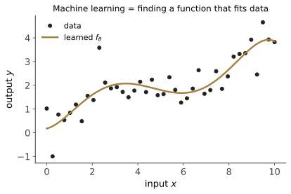
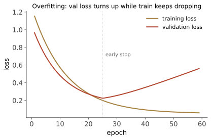

第 01 讲 · 机器学习就是找函数
诞生场景：20 世纪 50 年代，人们想让计算机识别手写邮政编码、判断细胞是否癌变、区分雷达信号里的飞机与飞鸟。这类任务的共同点是：人类自己说不清判断规则，却能轻松做出判断。既然写不出规则，能不能让机器从例子里自己"学"出规则？这就是模式识别（pattern recognition）——机器学习的起点。
学习层：训练误差降了，验证误差为什么会升？
具体情境：给一只传感器做标定
一台温度传感器每次给出原始读数 \(x\)，工程师用一支更可靠的参考仪器得到校准值 \(y\)。我们想找一个函数，把以后读到的原始数转换成校准值。下面的 8 个训练点用于拟合，另留出 7 个点作为验证点；蓝色方点默认可见，并且只应读作本实验的验证集。
先预测，再按预设按钮
先猜三个趋势：① 用一次函数时，模型可能同时在训练点和验证点上偏得较远；② 提高到适度的二次函数后，训练与验证 MSE 可能一起下降；③ 让七次函数插过全部训练点后，训练 MSE 会继续下降，但验证点附近可能出现弯折，样本外 MSE 反而上升。最后点“正则化”，看给高阶模型加一点约束是否能缓解这种摆动。
最小模型：同一组传感器数据，换复杂度
实验把原始读数归一化为 \(z=(x-5)/5\)，再使用多项式 \(f(x)=a_0+a_1z+\cdots+a_dz^d\)。预设的 \(d\) 是模型复杂度；\(\lambda\) 是岭式权重惩罚。脚本用固定数据和确定性的正规方程求解，不调用远程 ML 库，也不把这个小程序包装成生产训练引擎。
训练 MSE 记作 \(R_{\mathrm{train}}\)，验证 MSE 记作 \(R_{\mathrm{val}}\)。本实验显示的泛化差严格定义为 \(R_{\mathrm{val}}-R_{\mathrm{train}}\)；它可以为负，也不是总体真实风险 \(R(f)\) 的全部。
实验：只用预设观察训练–验证张力
无 JavaScript 时的静态读法：横坐标 \(x\) 是传感器原始读数，纵坐标 \(y\) 是参考仪器的校准值。训练集固定为：
| 点 | \(x\) | \(y\) |
|---|---|---|
| T1 | 0 | 1.10 |
| T2 | 1.4 | 2.00 |
| T3 | 2.8 | 3.70 |
| T4 | 4.2 | 5.37 |
| T5 | 5.6 | 6.48 |
| T6 | 7 | 8.96 |
| T7 | 8.4 | 10.24 |
| T8 | 9.8 | 12.88 |
保留验证集为：
| 点 | \(x\) | \(y\) |
|---|---|---|
| V1 | 0.7 | 1.61 |
| V2 | 2.1 | 2.82 |
| V3 | 3.5 | 4.31 |
| V4 | 4.9 | 5.85 |
| V5 | 6.3 | 7.68 |
| V6 | 7.7 | 9.51 |
| V7 | 9.1 | 11.63 |
预设结论可由这些行和公式复核，不把伪造的精确 MSE 写进静态文本：
- 欠拟合：\(d=1,\lambda=0\)，模型表达力有限；在这组固定数据上训练与验证都仍有明显残差。
- 适度拟合：\(d=2,\lambda=0\)，默认预设；它捕捉主要弯曲趋势，验证 MSE 低于高阶插值预设。
- 插值 / 过拟合：\(d=7,\lambda=0\)，8 个训练点对应 7 次多项式；训练 MSE 在精确算术下为 0，但保留验证点上的 MSE 明显变大。
- 正则化：\(d=7,\lambda=0.01\)，训练误差不再追求插值，验证表现相对高阶无约束预设回落；这只是这组数据的演示结论，不是所有数据集的保证。
脚本加载后，点击预设按钮即可查看真实计算的 \(R_{\mathrm{train}}\)、\(R_{\mathrm{val}}\) 与 \(R_{\mathrm{val}}-R_{\mathrm{train}}\)。图中的保留点始终标为“验证点”；本实验只画训练点和验证点。
误区与边界：泛化差不是一个万能分数
- 泛化差可为负：如果这次验证集碰巧更容易、噪声更小，可能出现 \(R_{\mathrm{val}}<R_{\mathrm{train}}\)。负值并不表示模型在所有未来样本上都比训练集更好。
- 它不是总体真实风险：训练 MSE 与验证 MSE 都只是有限样本平均；\(R_{\mathrm{val}}-R_{\mathrm{train}}\) 只描述这两个经验量的差，不能替代对未知分布取期望的 \(R(f)\)，也没有包含偏差、方差、噪声等全部泛化误差。
- 经典 U 形是平均图景：把很多可能的训练集或数据重复后取平均，常会看到偏差下降、方差上升、误差先降后升的 U 形；单个数据集、单个随机划分不必严格服从这条曲线。参数量继续越过插值门槛后，测试误差还可能再次下降，这个边界现象叫双下降，不能被本次小实验的经典 U 形预设覆盖。
1. 从一个分类问题说起

1936 年，统计学家 Fisher 发表了鸢尾花数据集：150 朵花，每朵测了 4 个数值（花萼长宽、花瓣长宽），分属 3 个品种。问题：给一朵新花的 4 个测量值，判断它是哪个品种。
用数学语言描述：
- 输入 \(x \in \mathbb{R}^4\)（4 个测量值组成的向量，称为特征）；
- 输出 \(y \in \{1, 2, 3\}\)（品种标签）；
- 我们手里有 150 个样本 \((x_1, y_1), \dots, (x_{150}, y_{150})\)，称为训练集。
我们想要的东西，本质上是一个函数：
输入测量值，输出品种。机器学习的全部内容，就是从数据里把这个 \(f\) 找出来。 分类是找输出离散的函数；回归（预测房价、温度）是找输出连续的函数；后面你会看到，图像识别是找 \(\mathbb{R}^{224\times224\times3} \to \{1,\dots,1000\}\) 的函数，ChatGPT 是找"给定前文，输出下一个词的概率分布"的函数。任务在变，"找函数"这个骨架从未变过。
为什么不直接写规则？
你可能会想：直接写 if 花瓣长 < 2.5: 品种1 不就行了？对鸢尾花或许可以。但对"识别照片里的猫"呢？没有人能写出"猫"的像素级规则——耳朵可能被遮住，姿态千变万化，光照各不相同。20 世纪 70–80 年代的专家系统走的就是人工写规则的路线，最终淹死在规则的组合爆炸和例外的海洋里。机器学习的核心转变是：
人不再提供规则，只提供例子；规则（函数）由算法从例子中归纳出来。
2. 找函数的三要素
"从数据找函数"要回答三个问题，任何机器学习方法——从最简单的线性回归到 GPT——都由这三个组件构成：
1. 在哪找？——假设空间 \(\mathcal{H}\)
所有函数的集合太大了，必须先限定一个候选范围。比如"所有线性函数" \(\mathcal{H} = \{f(x) = w^\top x + b \mid w \in \mathbb{R}^d, b \in \mathbb{R}\}\)，或"所有深度为 5 的决策树"，或"某个固定架构、参数任取的神经网络"。选定 \(\mathcal{H}\) 就是选定模型；\(\mathcal{H}\) 里每个具体函数由一组参数（如 \(w, b\)）确定，找函数 = 找参数。
2. 什么叫"找得好"？——损失函数
需要一个可计算的标准来度量"函数 \(f\) 在样本 \((x,y)\) 上错得多厉害"，记为 \(\ell(f(x), y)\)。常用的：
- 0-1 损失（分类）：\(\ell(\hat y, y) = \mathbb{1}[\hat y \neq y]\)，错了记 1 分，对了记 0 分；
- 平方损失（回归）：\(\ell(\hat y, y) = (\hat y - y)^2\)；
- 交叉熵损失（概率输出的分类，第 07 讲的主角）：\(\ell(\hat p, y) = -\log \hat p_y\)。
在整个训练集上的平均损失称为经验风险（empirical risk）：
3. 怎么找？——优化算法
在 \(\mathcal{H}\) 中寻找让 \(\hat R(f)\) 最小的函数：
这个策略叫经验风险最小化（ERM）。具体怎么求这个 \(\arg\min\)，不同模型不同：线性回归有解析解，SVM 解凸二次规划（第 02 讲），神经网络用梯度下降（第 04 讲）。
一句话版本
机器学习 = 假设空间（在哪找）+ 损失函数（什么算好）+ 优化算法（怎么找）。以后每学一个新模型，先问这三个问题，它就"透明"了。
3. 概率视角：我们真正想要什么
上面有个隐患：我们最小化的是训练集上的损失，但我们真正关心的是新样本上的表现——没人在乎模型能否背出训练集，医生要的是对下一个病人诊断正确。
把这件事说严格：假设所有样本（训练的、未来的）都独立地采自同一个未知分布 \(\mathcal{D}\)（即 i.i.d. 假设，\((x, y) \sim \mathcal{D}\)）。我们真正想最小化的是期望风险（真实风险）：
而 \(\hat R(f)\) 只是 \(R(f)\) 用 \(n\) 个样本做的蒙特卡洛估计。于是整个领域的中心问题浮出水面：
最小化 \(\hat R\)（能算）得到的 \(\hat f\)，它的 \(R\)（不能算）也小吗？ 这就是泛化（generalization）问题。第 5 节将证明：在适当条件下，答案是肯定的——这是机器学习作为一门学科能够成立的数学根基。
3.1 理论上限：贝叶斯最优分类器
先问一个更基本的问题：如果我们完全知道 \(\mathcal{D}\)，最好能做到什么程度？
命题（贝叶斯最优分类器）：0-1 损失下，期望风险最小的分类器是
即"报出后验概率最大的类别"。
证明：对任意分类器 \(f\)，条件在 \(X = x\) 上的期望损失为
要让它最小，只需让被减去的 \(\mathbb{P}(Y = f(x) \mid X=x)\) 最大，即取后验最大的类。逐点最优，对 \(x\) 取期望后整体也最优。\(\blacksquare\)
它的风险 \(R(f^*) = \mathbb{E}_x\big[1 - \max_k \mathbb{P}(Y=k\mid X=x)\big]\) 称为贝叶斯误差——问题本身的不可约难度（同样的症状可能对应不同疾病，误差不可能为 0）。任何模型都不可能好过它；机器学习是在不知道 \(\mathcal{D}\) 的情况下逼近它。第 03 讲的朴素贝叶斯就是对这个公式的直接建模。
回归版本同理可证：平方损失下最优预测是条件期望 \(f^*(x) = \mathbb{E}[Y \mid X = x]\)。（提示：对任意 \(f\)，把 \(\mathbb{E}[(Y - f(x))^2 \mid X=x]\) 按 \(Y - f^* + f^* - f\) 展开，交叉项为零。动笔验证一下。）
3.2 偏差–方差分解
模型的误差从哪来？对回归问题有一个漂亮的精确分解。设真实关系为 \(y = g(x) + \varepsilon\)，噪声 \(\varepsilon\) 均值 0、方差 \(\sigma^2\)。训练集 \(S\) 是随机的，训练出的模型 \(\hat f_S\) 因而也是随机的。固定一个测试点 \(x\)，考察平均表现（对 \(S\) 和 \(\varepsilon\) 取期望）：
记 \(\bar f(x) = \mathbb{E}_S[\hat f_S(x)]\)（"平均模型"的预测）。推导：
三项各有含义：
- 噪声 \(\sigma^2\)：问题固有的不可约误差（回归版的贝叶斯误差）；
- 偏差（bias）：平均而言模型系统性地偏离真相多少——模型太简单、表达力不够时偏差大（欠拟合）；
- 方差（variance）：换一批训练数据，模型预测抖动多大——模型太复杂、对训练集的偶然细节过度敏感时方差大（过拟合）。
经典示意图常把复杂度提高画成“偏差下降、方差上升”，于是平均测试误差呈 U 形，暗示存在一个“刚刚好”的复杂度。这里的单调变化和 U 形都是对模型族、训练集与噪声作简化后的平均图景，不是每个数据集、每次划分都必须服从的定律。上方的 generalization-gap 实验固定一组小数据，让你先观察预设之间的训练–验证差异，再把这条平均图景当作需要检验的假设。
现代注脚：双下降
深度学习时代发现，跨过插值阈值并继续增加参数后，测试误差在某些模型与训练设置中可能再次下降（double descent，Belkin et al. 2019）。这不把经典 U 形升级成“完整曲线的左半段”，而是说明风险–复杂度关系依赖模型族、优化、正则化与数据分布；第 07 讲的 Scaling Laws 会再次撞见这个主题。
3.3 正则化：给复杂度上缰绳
控制过拟合的通用手段是在目标里加惩罚项，压制参数的"放飞程度"。以线性回归为例，岭回归（ridge regression）求解
它有解析解。对目标求梯度并置零：\(\frac{2}{n}X^\top(Xw - y) + 2\lambda w = 0\)，得
注意 \(\lambda > 0\) 时 \(X^\top X + n\lambda I\) 恒可逆（对称半正定矩阵加正对角，最小特征值 \(\geq n\lambda > 0\)）——正则化同时解决了统计问题（过拟合）和数值问题（共线性导致的不可逆）。\(\lambda\) 越大，模型越"保守"：偏差增大、方差减小。正则化就是在偏差–方差之间手动移动滑块。 这个思想贯穿全课程：SVM 的软间隔参数 \(C\)（第 02 讲）、决策树剪枝（第 03 讲）、神经网络的 dropout 与权重衰减（第 05 讲），全是它的变体。
4. 泛化为什么是可能的

现在兑现第 3 节的承诺：证明"训练集上表现好 ⇒ 新数据上大概率也好"。这一节是全课程数学上最扎实的部分之一，值得动笔跟一遍。
4.1 有限假设空间：Hoeffding + 联合界
工具（Hoeffding 不等式）：\(Z_1, \dots, Z_n\) 独立、取值于 \([0,1]\)、均值 \(\mu\)，则
对固定的一个函数 \(f\)，取 \(Z_i = \ell(f(x_i), y_i) \in [0,1]\)（0-1 损失），则 \(\hat R(f)\) 是均值为 \(R(f)\) 的样本平均，Hoeffding 给出 \(\hat R(f)\) 偏离 \(R(f)\) 超过 \(\epsilon\) 的概率指数小。
但这还不够！陷阱在于：\(\hat f\) 是挑出来的——我们在 \(\mathcal{H}\) 里专挑训练误差最小的那个，"挑选"本身会制造偏差（就像 1000 个人抛 10 次硬币，专挑正面最多的那位，他的战绩不能代表硬币）。解法是联合界（union bound）：要求所有 \(f \in \mathcal{H}\) 同时不偏离：
令右边等于 \(\delta\)，反解 \(\epsilon\)，得到：以概率至少 \(1 - \delta\)，对所有 \(f \in \mathcal{H}\) 同时成立
读出三条信息：
- 样本越多越可靠：误差界按 \(1/\sqrt{n}\) 收缩；
- 假设空间越大，需要的数据越多：代价是 \(\ln|\mathcal{H}|\)——模型复杂度的第一个严格定义；
- ERM 是有道理的：既然所有 \(f\) 的 \(\hat R\) 都接近 \(R\)，挑 \(\hat R\) 最小的 \(\hat f\)，其 \(R\) 也接近 \(\mathcal{H}\) 内的最优。
4.2 无限假设空间：VC 维
线性分类器有无穷多个，\(|\mathcal{H}| = \infty\)，上面的界失效。突破口是一个观察：无穷多个函数，在 \(n\) 个固定样本点上能表现出的"行为"却是有限的——每个 \(f\) 在 \(n\) 个点上产生一个 \(\pm 1\) 标签串，至多 \(2^n\) 种。真正该数的不是函数个数，而是行为个数。
定义（增长函数与打散）：\(\mathcal{H}\) 在 \(n\) 个点上的增长函数
即 \(n\) 个点上能实现的标签组合的最大数目。若某组 \(n\) 个点上 \(2^n\) 种标签全能实现，称这组点被 \(\mathcal{H}\) 打散（shatter）。
定义（VC 维）：\(\mathrm{VC}(\mathcal{H})\) 是能被 \(\mathcal{H}\) 打散的点集的最大规模。
例子（值得自己验证）：
- \(\mathbb{R}\) 上的阈值函数 \(f(x) = \mathrm{sign}(x - t)\)：能打散 1 个点，打不散 2 个（无法实现"左正右负"），VC 维 \(= 1\)；
- \(\mathbb{R}^2\) 上的线性分类器：能打散 3 个不共线的点，打不散任何 4 个点（XOR 型标签无法线性分开——记住这个例子，第 04 讲它将扮演"杀死感知机"的角色），VC 维 \(= 3\)；
- 一般地，\(\mathbb{R}^d\) 上线性分类器的 VC 维 \(= d + 1\)。
引理（Sauer–Shelah）：若 \(\mathrm{VC}(\mathcal{H}) = d\)，则
证明（对 \(n + d\) 归纳）：记 \(\Phi_d(n) = \sum_{i=0}^d \binom{n}{i}\)。基例：\(d = 0\) 时打散不了任何单点，所有函数在任意点集上行为唯一，\(\Pi = 1 = \Phi_0(n)\)；\(n = 0\) 时 \(\Pi = 1 = \Phi_d(0)\)。归纳步：取实现最大行为数的点集 \(\{x_1, \dots, x_n\}\)，记 \(\mathcal{H}\) 在其上的行为集合为 \(A\)。把 \(A\) 按前 \(n-1\) 个坐标分组： 记 \(A'\) = 行为在前 \(n-1\) 个点上的投影集合，\(A''\) = 那些"前 \(n-1\) 个坐标相同、第 \(n\) 个坐标 0/1 都出现"的投影（即成对出现的行为）。则 \(|A| = |A'| + |A''|\)（每个投影至多贡献 2 个行为，成对的多贡献 1 个）。
- \(A'\) 是 \(\mathcal{H}\) 限制在 \(n - 1\) 个点上的行为集，其对应假设类 VC 维 \(\leq d\)，归纳得 \(|A'| \leq \Phi_d(n-1)\)；
- \(A''\) 对应的函数族在前 \(n-1\) 个点上如果打散某 \(S\) 集，则加上 \(x_n\) 后 \(S \cup \{x_n\}\) 被原族打散（因为第 \(n\) 坐标两种取值都有），故其 VC 维 \(\leq d - 1\)，归纳得 \(|A''| \leq \Phi_{d-1}(n-1)\)。
由帕斯卡恒等式 \(\Phi_d(n-1) + \Phi_{d-1}(n-1) = \Phi_d(n)\)，证毕。\(\blacksquare\)
关键推论：当 \(n \geq d\) 时 \(\Phi_d(n) \leq \left(\frac{en}{d}\right)^d\)——增长函数是多项式 \(O(n^d)\)，而非指数 \(2^n\)。行为数被 VC 维死死压住。
定理（VC 泛化界，Vapnik–Chervonenkis 1971）：以概率至少 \(1 - \delta\)，对所有 \(f \in \mathcal{H}\) 同时成立
（完整证明用"对称化"技巧把无限类问题转到两组样本上的有限行为比较，再套 Sauer 引理与 Hoeffding，结构与 4.1 完全同型，长约两页——感兴趣可读 Understanding Machine Learning (Shalev-Shwartz & Ben-David) 第 6 章。）
这条界回答了本讲的中心问题：只要模型的 VC 维 \(d\) 相对样本量 \(n\) 不太大，训练误差就是真实误差的可靠代理，从数据中学习就是数学上正当的行为。同时它也预告了一个反常：一个大型神经网络的 VC 维大到使这条界完全空洞（界值 \(\gg 1\)），可它们明明泛化得很好——经典理论解释不了深度学习为什么 work，这是当代理论研究的头号未解之谜之一（第 07 讲再会）。
4.3 没有免费的午餐
最后一块拼图。NFL 定理（Wolpert 1996，非正式陈述）：对"所有可能的目标函数"平均而言，任何两个学习算法的期望表现完全相同——包括随机瞎猜。
这听上去虚无，实则深刻：不对世界做任何假设，就不可能学习。 学习之所以在现实中有效，是因为现实世界的函数不是均匀分布的——它们平滑、有结构、有规律，而我们选择的假设空间（归纳偏置，inductive bias）恰好偏向这类函数。"选模型"本质上是"押注世界长什么样"：线性模型押注线性关系，决策树押注按特征分段，CNN 押注平移不变性（第 05 讲），Transformer 押注"上下文中的相关性"（第 06 讲）。没有中立的算法，只有合适与不合适的偏置。
5. 工程收尾：数据怎么用
理论讲完，一条实践铁律：评估必须用没参与过任何决策的数据。
把它落到一个传感器标定项目：训练集是原始读数与参考仪器读数的配对，用来求模型参数；验证集是同一任务中预先留出的配对，用来选多项式次数、正则化强度和停止规则。复杂度提高时，训练误差可以继续下降，甚至把训练读数几乎逐点穿过；但曲线在两个读数之间摆动，新的传感器读数的误差可能上升。此时实验中报告的泛化差是 \(R_{\mathrm{val}}-R_{\mathrm{train}}\)，它可为负，也只是两个有限验证的经验 MSE 之差，不等于未知现场分布上的总体真实风险，更不是泛化误差的全部。
- 训练集：喂给优化算法找参数；
- 验证集：选超参数（多项式次数、\(\lambda\)、网络层数……）——注意超参数的选择也是一种"学习"，也会过拟合验证集；
- 测试集：只在最终评估时用一次。反复看测试集再调模型，等于把测试集变成了验证集，报出来的数字就是自欺。
只有当复杂度和超参数已经由验证集选定并冻结，才打开封存的测试集做最终一次评估；本讲的交互图默认不绘制 test 点，也不提供反复查看 test 的路径。若你连续看测试结果再改模型，测试集就已承担验证集的角色，最后的数字不再是独立评估。
数据少时用 k 折交叉验证：分 k 份，轮流留一份验证、其余训练，平均 k 次结果——以 k 倍计算换取对全部数据的利用。
本讲小结
| 概念 | 一句话 |
|---|---|
| 机器学习 | 从例子中找函数：假设空间 + 损失 + 优化 |
| ERM | 最小化训练集平均损失 |
| 泛化 | 训练表现 ⇒ 新数据表现；机器学习的中心问题 |
| 贝叶斯最优 | 已知分布时的理论上限，\(\arg\max_k \mathbb{P}(Y{=}k\mid x)\) |
| 偏差–方差 | 误差 = 噪声 + 偏差² + 方差；复杂度是滑块 |
| VC 维 | 无限假设类的复杂度度量 = 最大可打散点数 |
| NFL | 没有万能算法；一切学习都依赖归纳偏置 |
动手：操作本讲上方的 generalization-gap 实验——用预设多项式比较训练/验证 MSE 与 \(R_{\mathrm{val}}-R_{\mathrm{train}}\)，观察正则化如何改变高阶模型的样本外表现；真正的 test 集只在模型冻结后最终评估一次。
延伸阅读：Shalev-Shwartz & Ben-David《Understanding Machine Learning》第 2–6 章（本讲理论的完整版）；李航《统计学习方法》第 1 章。
下一讲：既然线性分类器是最简单的假设空间，那"找一条分界线"具体怎么找？1957 年的感知机给出第一个答案，而 1990 年代的 SVM 给出了那个时代最优雅的答案——顺便发明了机器学习史上最重要的技巧之一：核方法。